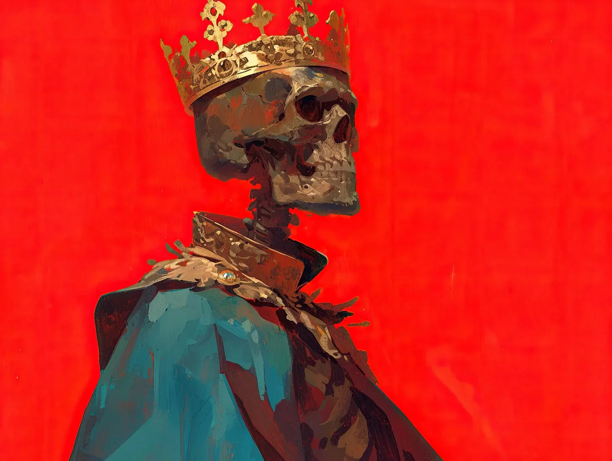

암살자의 칼이 내 심장을 관통했을 때, 나는 그저 그것을 인정하기를 거부했다—죽음이란 문맹이나 기본적 인권처럼 그저 평민들의 미신에 불과했으니까.
[When the assassin’s blade pierced my heart, I simply refused to acknowledge it—death was nothing more than a peasant’s superstition, like literacy or basic human rights.]
최근 들어 시간이란 것이 참 변덕스러워졌지만, 나의 찬란한 통치를 끝내려 했던 그 한심한 시도들 하나하나를 선명히 기억하고 있었다. 마치 내 개인 미술관의 그림들처럼, 이 기억들은 내가 가장 즐기는 오락거리 중 하나였다.
[Time had become such a fickle thing lately, but I distinctly remembered each pathetic attempt to end my magnificent reign. Like paintings in my private gallery, these memories were among my favorite entertainments.]
겨울 연회를 기억하고 있다. 10년 전이었을 수도, 어쩌면 어제였을 수도 있지만. 이스트마치 공작의 그 서툰 독살 시도는 너무나 뻔했다.
[I remembered the winter feast, though it could have been ten years ago, or perhaps yesterday. The Duke of Eastmarch had been so obvious with his little poisoning attempt.]
그날 저녁 와인은 특히나 생동감 넘쳤는데, 시안화물의 풍미와 비소의 미묘한 향이 느껴졌다.
[The wine had tasted particularly vibrant that evening, with notes of cyanide and just a hint of arsenic.]
“정말 훌륭한 빈티지군요!” 내가 일곱 번째 잔을 비우며 선언했다. 그 동안 공작의 얼굴은 사람들이 말하는 내 얼굴보다도 더 하얗게 질려갔다. “약간 매콤하긴 하지만. 더 가져오시지요!”
[“Magnificent vintage!” I’d declared, draining my seventh cup while the Duke’s face turned whiter than mine supposedly was. “Though a touch spicy. Do serve more!”]
그날 밤 그가 “자연의 법칙을 거스른다"는 꽤나 격양된 어조의 편지를 남기고 왕국을 도망치듯 떠나는 걸 보며 나는 무척이나 즐거웠다. 참으로 과한 반응이었지.
[I’d watched with amusement as he fled the kingdom that very night, leaving behind a rather strongly worded note about "defying the laws of nature.” Such dramatics.]
우두둑.
[crack.]
“이 조악하기 짝이 없는 의자를 보시게,” 왕좌에서 자세를 바꾸다 대퇴골이 부서지는 소리가 뚜렷이 들렸지만, 나는 그것을 무시한 채 중얼거렸다. “대신관, 메모해두시게: 왕실 목수를 처형하도록.”
[ “Blast these poorly made chairs,” I muttered, ignoring the distinct sound of my femur splintering as I shifted on my throne. “Chancellor, make a note: execute the royal carpenter.”]
내 완벽한 기억 속에서 사냥 원정 때의 사건이 특히 선명하게 떠올랐다. 가슴을 관통한 쇠뇌 화살은 꽤나 불편했는데, 특히 내가 가장 아끼던 더블릿을 망가뜨렸을 때는 더욱 그랬다. “형편없는 실력이군,” 나는 나무 위에서 떨고 있는 암살자를 향해 혀를 차며 말했다. “왕을 쏘려거든, 최소한 머리는 겨냥하시지.”
[The hunting expedition incident stood out particularly well in my impeccable memory. The crossbow bolt through my chest had been rather inconvenient, especially when it ruined my favorite doublet. “Poor marksmanship,” I’d tutted at the trembling assassin hiding in the trees. “If you’re going to shoot a king, at least aim for the head.”]
나는 가슴에서 화살이 튀어나온 채로 성으로 걸어가면서, 그 실패한 암살자에게 제대로 된 암살 기술에 대해 강의를 해주었다. 그 후 그는 걸어다니는 시체에 대해 중얼거리며 완전히 미쳐버렸다. 참으로 속물적인 반응이었지.
[I’d walked back to the castle with the bolt protruding from my chest, lecturing the would-be killer about proper assassination techniques. He’d gone quite mad after that, babbling about walking corpses. How pedestrian.]
흑사병은 특히나 지루했다. 내 왕국 전체가 흑사병에 굴복해갈 때도, 나는 그런 평민들의 걱정거리에 신경 쓸 겨를이 없었다. “정신력의 문제일 뿐이오,” 나는 피부가 매혹적인 검은색으로 변해가는 것을 보며 죽어가는 의회 의원들에게 설명했다.
[The plague had been particularly tedious. While my entire kingdom succumbed to the Black Death, I simply couldn’t be bothered with such peasant concerns. “Mind over matter,” I’d explained to my dying council, watching their skin turn fascinating shades of black.]
“증상을 그저 무시하면 괜찮아질 것이오.” 이상하게도 그들 중 누구도 내 조언을 따르지 않았다. 그들의 후임자들은 훨씬 무능했지만, 내가 너무 가까이 다가갈 때마다 기절하는 아주 흥미로운 습관이 있었다. 분명 허약한 체질 때문이리라.
[“Simply refuse to acknowledge the symptoms, and you’ll be fine.” Oddly enough, none of them took my advice. Their replacements were far less competent, though they did have the most fascinating habit of fainting whenever I got too close. Weak constitutions, obviously.]
“폐하,” 새로운 술잔지기가 떨리는 손으로 은잔을 들고 내 회상을 방해했다. “오후의 음료를 가져왔습니다.”
[“Your Majesty,” my new cupbearer interrupted my reverie, holding out a silver goblet with trembling hands. “Your afternoon refreshment.”]
광택 나는 표면에 비친 내 모습을 보았다—여전히 잘생겼지만, 조명 때문인지 내 안색이 다소… 해골처럼 보였다. “이렇게 조악한 작품을 만든 은장이는 채찍질을 당해야겠군,” 일그러진 반사상에서 완벽하게 움직이는 내 턱을 보며 선언했다. “모든 사람이 끔찍하게 보이는구나.”
[I caught my reflection in the polished surface—handsome as ever, though the lighting did make my complexion appear rather… skeletal. “The silversmith shall be flogged for this poor craftsmanship,” I declared, watching my jaw move perfectly in the warped reflection. “It makes everyone look positively ghastly.”]
탑에서 있었던 사건은 아마도 내가 가장 좋아하는 기억일 것이다. 지루한 귀족들이 나를 가장 높은 탑에서 밀어버리려 한 후, 나는 목이 어떤 이들이 말하는 “부자연스러운 각도"로 꺾인 채로 60층의 계단을 다시 걸어 올라가야만 했다.
[The tower incident remained perhaps my favorite. After some tiresome nobles tried to push me from the highest spire, I had to walk back up sixty flights of stairs, my neck at what some might call an "unnatural angle.”]
“엉터리 건축이군,” 내 방에 도착해서 불평했다. “난간이 명백히 기준에 미달이야.” 내가 예상치 못하게 돌아온 것과 귀족들이 그 후 심장마비를 일으킨 것은 분명 아무 관련이 없었다. 다만 과도하게 비명을 지른 하인들의 급여는 깎아야 했지만.
[“Sloppy architecture,” I’d complained upon reaching my chambers. “The railings are clearly not up to code.” The nobles’ subsequent heart attacks were surely unrelated to my unexpected return. Though I did have to dock the servants’ pay for their excessive screaming.]
“폐하,” 새로 온 서기가 내 서명이 필요한 처형 명령서를 들고 다가왔다. “요청하신 문서들입니다…”
[“Sire,” my newest scribe approached, carrying execution orders requiring my signature. “The documents you requested…”]
“아, 그래.” 내가 깃펜을 잡으려 할 때, 검지가 떨어져 양피지 위로 덜그럭 떨어지는 것에 눈살을 찌푸렸다. “이 외국산 필기구들은 정말 쓸모없군. 왕실 병참감을 처형하도록 하게.” 나는 익숙한 동작으로 손가락을 다시 붙였다. “자, 어디까지 했더라?”
[“Ah, yes.” I reached for the quill, frowning as my index finger detached and clattered onto the parchment. “These foreign-made writing implements are absolutely worthless. Have the royal quartermaster executed.” I reattached the finger with a practiced motion. “Now, where were we?”]
경비병들은 최근 그들이 채택한 특이한 뒷걸음질로 그를 데리고 나갔다—틀림없이 새로운 궁정 유행일 테지, 비록 그들이 계속해서 십자가를 그리는 것은 좀 과했지만.
[The guards escorted him away with that peculiar backward shuffle they’d adopted lately—a new court fashion, no doubt, though their persistent crossing of themselves was a tad excessive.]
“거울아,” 나는 금박을 입힌 거울을 향해 손짓하며 명령했다. “이 바보들에게 나의 찬란한 용안을 보여주거라.” 나는 살짝 비뚤어져 있던 왕관을 바로 했다. 완벽해.
[“Mirror,” I commanded, gesturing to the gilded looking glass. “Show these fools my magnificent visage.” I adjusted my crown, which had been sitting slightly askew. Perfect.]
내가 내 모습을 감상하는 동안 궁정은 조용해졌다. 나는 여전히 이렇게나 잘생긴 악마였다! 비록 거울 표면이 오늘따라 유난히 어두워 보였지만, 내 강인한 턱선과 반짝이는 눈동자, 그리고 건강한 홍조를 띤 볼이 선명히 보였다. 이상하게도 방금 바로 잡았는데도 왕관이 또 기울어져 보였다.
[The court fell silent as I admired my reflection. Such a handsome devil I remained! Though the mirror’s surface seemed peculiarly dark today, it clearly showed my strong jaw, bright eyes, and the healthy flush of my cheeks. Strange how the crown appeared to be tilting again, despite my adjustment.]
“보이시오?” 나는 청중들을 향해 양팔을 크게 벌렸다. 바닥으로 떨어지는 작은 뼈들의 부드러운 소리는 무시한 채. “불멸의 위엄 그 자체 아니오!”
[“You see?” I turned to my audience, spreading my arms wide, ignoring the soft patter of various small bones falling to the floor. “The very picture of immortal majesty!”]
그들은 내가 이제 너무나 익숙해진 그 크고 두려움 가득한 눈으로 나를 응시했다. 몇몇은 눈물을 흘리고 있었다—틀림없이 내 웅장함에 압도되었겠지. 한 어리석은 소녀는 그녀의 통치자의 순수한 장엄함에 압도되어 기절까지 했다. 그들이 모두 옹기종기 모여있는 모습이 정말 감동적이었다. 이런 충성심이라니.
[They stared at me with those same wide, fearful eyes I’d grown so accustomed to. A few were weeping—no doubt overwhelmed by my grandeur. One foolish girl even fainted, overcome by the sheer magnificence of her ruler. The way they all huddled together was touching, really. Such loyalty.]
“자, 이제,” 나는 왕좌에 다시 자리를 잡으며, 내 가슴에 여전히 꽂혀있는 무기들—암살자의 칼날과 쇠뇌 화살, 그리고 여러 실패한 시도의 흔적들을 무심히 옆으로 치웠다.
[“Now then,” I settled back on my throne, idly brushing aside the collection of weapons still protruding from my chest—the assassin’s blade joining the crossbow bolt and several other failed attempts.]
갈비뼈 하나가 바닥에 떨그럭 떨어졌지만, 나는 관대하게 무시했다. “새로운 세율에 대해 논의해 봅시다. 세 배로 올리는 게 어떨까 싶은데. 어차피—” 나는 떨고 있는 신하들을 향해 미소를 지었고, 몇 개의 이가 턱에서 떨어져 나왔다. “—우리에겐 모든 시간이 있으니까요.”
[A rib clattered to the floor, but I magnanimously ignored it. “Let’s discuss the new tax rates. I’m thinking we should triple them. After all—” I smiled at my trembling subjects, several teeth tumbling from my jaw, “—we have all the time in the world.”]
내 뒤에 서 있는 거울은 텅 비어 있었고, 단지 붉은 태피스트리와 황금 왕좌만을 비추고 있었다. 그 왕좌에는 해골 왕이 앉아있었는데, 그의 왕관은 반짝이는 두개골 위에서 영원히 비뚤어진 채로, 자신이 죽인 왕국을 같은 철권으로 통치하고 있었다.
[Behind me, the mirror stood empty, reflecting nothing but the crimson tapestries and the golden throne where a skeleton king held court, his crown eternally askew on his gleaming skull, ruling his kingdom of ghosts with the same iron fist that had killed it.]
그의 늑골에는 기괴한 장식품처럼 여러 무기들이 튀어나와 있었고, 그의 발치에는 잡다한 뼈들이 작은 더미를 이루고 있었다.
[Various weapons protruded from his ribcage like macabre decorations, and a small pile of assorted bones gathered at his feet.]
하지만 나는 원래 거울을 신뢰하지 않는 사람이었다. 분명 이 모든 것이 내 적들에 의해 마법이 걸린 것이 틀림없다. 나는 왕실 거울 제작자를 처형해야겠다고 마음속으로 메모했다.
[But I’d never been one to trust mirrors anyway. Clearly, they were all enchanted by my enemies. I made a mental note to have the royal mirror-maker executed.]
내 나머지 손가락들을 어디에 두었는지만 기억해내면 되는데.
[Once I remembered where I’d put the rest of my fingers.]